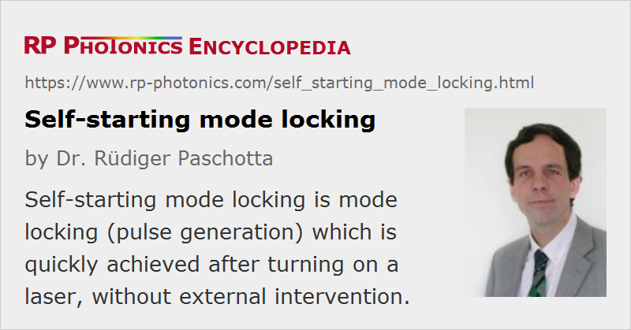

Self-starting Mode Locking
Definition: mode locking which is quickly achieved after turning on a laser, without external intervention
More general term: mode locking
German: selbststartendes Modenkoppeln
Categories: lasers, light pulses
How to cite the article; suggest additional literature
Author: Dr. Rüdiger Paschotta
Some passively mode-locked lasers exhibit difficulties with starting the mode-locking process: after turning on the pump power, they often start in a (possibly noisy) continuous-wave mode, and the generation of ultrashort pulses can be started only with an external intervention, e.g. by knocking on an optical component of the laser resonator or vibrating a mirror (moving mirror technique). Mode-locked lasers which automatically start mode locking without such intervention are called self-starting. This property is obviously important for practical applications.
Self-starting Bulk Lasers
Self-starting mode locking is normally achieved when passive mode locking of a bulk laser is done with a semiconductor saturable absorber mirror (SESAM) or some other type of “slow” saturable absorber. The finite recovery time of such a device is helpful for self-starting mode locking, since it reduces the saturation power for long pulses, as occur during the start-up phase, and thus increases the saturation effect at that time. With a Kerr-lens mode-locked laser, self-starting is significantly more difficult to achieve, because the Kerr lens provides a very fast absorber, the effect of which is weak for long pulses. Note that Kerr lens mode locking is sometimes called “self mode-locking” because it does not require a visible mode-locking device, but not in the sense one would achieved self-starting mode locking that way.
Another factor inhibiting reliable self-starting is the presence of parasitic intracavity reflections. Even if the reflectivities involved are very small, they can be important, because coherent coupling can occur in many resonator round trips. Such reflections must therefore always be carefully suppressed in mode-locked lasers, e.g. by avoiding any optical surfaces (even anti-reflection coated ones) perpendicular to the beam. In ring lasers, the effect of parasitic reflections tends to be weaker [7].
An uneven spacing of the resonator mode frequencies can also inhibit self-starting. This can result from chromatic dispersion and from mode pulling effects, which can arise from, e.g., spatial hole burning.
Self-starting is generally more difficult to achieve in mode-locked lasers with long laser resonators, i.e. with a low pulse repetition rate, and for lasers generating very short pulses. This results from the huge ratio of peak power (in the mode-locked state) to average power. The saturable absorber parameters must be adjusted to achieve reasonably strong (i.e. not too strong) absorber saturation under mode-locked conditions, which leads to only very weak effects for the first fluctuations occurring in a continuous-wave state.
Fiber Lasers
In fiber lasers, parasitic reflections are generally more difficult to eliminate. This is particularly the case for setups which are made using bulk-optical elements, where e.g. reflections from fiber ends can cause problems. Angle-polished fiber ends are a way to suppress this effect, if the polishing angle is sufficiently large, but this technique implies additional handling and alignment efforts. Even within a fiber, Rayleigh scattering leads to some level of back-reflections, particularly in rare-earth-doped fibers. Other factors which makes self-starting more difficult are the use of fast (artificial) saturable absorbers, e.g. realized using nonlinear polarization rotation, and the typically long laser resonators.
For such reasons, ultrafast fiber lasers often exhibit non-self-starting mode locking. It can occur e.g. that after switching the laser on, the pump power first has to be set to a high level where mode locking starts, and then reduced to a level where stable high-quality pulses are generated.
Questions and Comments from Users
Here you can submit questions and comments. As far as they get accepted by the author, they will appear above this paragraph together with the author’s answer. The author will decide on acceptance based on certain criteria. Essentially, the issue must be of sufficiently broad interest.
Please do not enter personal data here; we would otherwise delete it soon. (See also our privacy declaration.) If you wish to receive personal feedback or consultancy from the author, please contact him e.g. via e-mail.
By submitting the information, you give your consent to the potential publication of your inputs on our website according to our rules. (If you later retract your consent, we will delete those inputs.) As your inputs are first reviewed by the author, they may be published with some delay.
Bibliography
| [1] | E. P. Ippen, L. Y. Liu, and H. A. Haus, “Self-starting condition for additive-pulse mode-locked lasers”, Opt. Lett. 15 (3), 183 (1990), doi:10.1364/OL.15.000183 |
| [2] | L. Y. Liu et al., “Self-starting additive-pulse mode locking of a Nd:YAG laser”, Opt. Lett. 15 (10), 553 (1990), doi:10.1364/OL.15.000553 |
| [3] | F. Krausz et al., “Self-starting passive mode locking”, Opt. Lett. 16 (4), 235 (1991), doi:10.1364/OL.16.000235 |
| [4] | H. A. Haus and E. P. Ippen, “Self-starting of passively mode-locked lasers”, Opt. Lett. 16 (17), 1331 (1991), doi:10.1364/OL.16.001331 |
| [5] | S. Chen and J. Wang, “Self-starting issues of passive self-focusing mode locking”, Opt. Lett. 16 (21), 1689 (1991), doi:10.1364/OL.16.001689 |
| [6] | J. Zehetner et al., “Passive mode locking of homogeneously and inhomogeneously broadened lasers”, Opt. Lett. 17 (12), 871 (1992), doi:10.1364/OL.17.000871 |
| [7] | K. Tamura et al., “Unidirectional ring resonators for self-starting passively mode-locked lasers”, Opt. Lett. 18 (3), 220 (1993), doi:10.1364/OL.18.000220 |
| [8] | F. Krausz and T. Brabec, “Passive mode locking in standing-wave laser resonators”, Opt. Lett. 18 (11), 888 (1993), doi:10.1364/OL.18.000888 |
| [9] | Y. Chou et al., “Measurements of the self-starting threshold of Kerr-lens mode-locking lasers”, Opt. Lett. 19 (8), 566 (1994), doi:10.1364/OL.19.000566 |
| [10] | C. J. Chen et al., “Self-starting of passively mode-locked lasers with fast saturable absorbers”, Opt. Lett. 20 (4), 350 (1995), doi:10.1364/OL.20.000350 |
| [11] | A. Gordon et al., “Self-starting of passive mode locking”, Opt. Express 14 (23), 11142 (2006), doi:10.1364/OE.14.011142 |
See also: passive mode locking, saturable absorbers, Kerr lens mode locking, semiconductor saturable absorber mirrors, The Photonics Spotlight 2008-05-13, The Photonics Spotlight 2018-01-08
and other articles in the categories lasers, light pulses
|  |
If you like this page, please share the link with your friends and colleagues, e.g. via social media:
These sharing buttons are implemented in a privacy-friendly way!